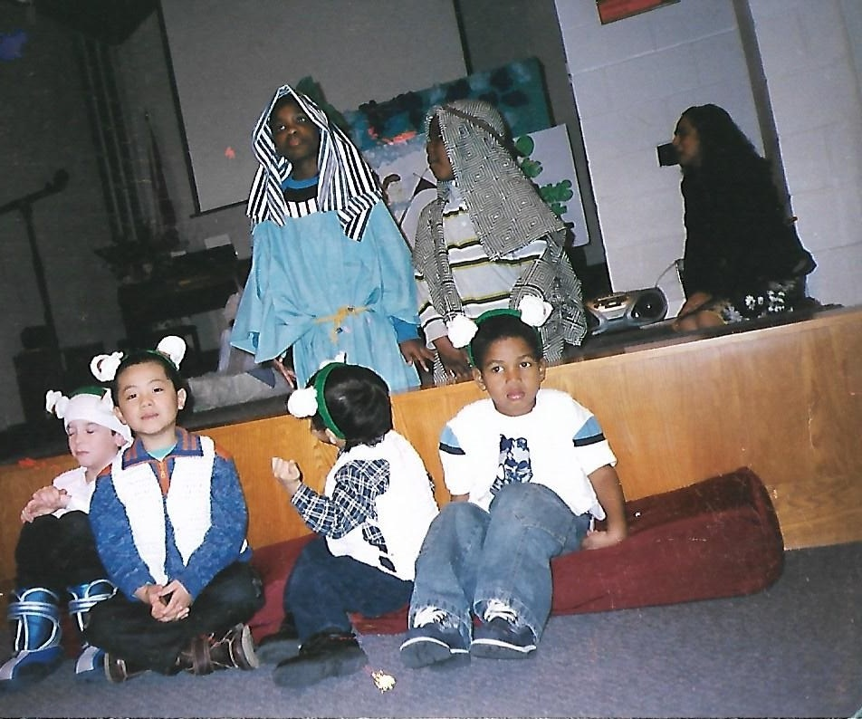

A prophet is a person regarded as an inspired teacher or a proclaimer of the will of God. When I was about six years old, I participated in a Christmas play for my Christian daycare. I played as a sheep, amongst a herd, guided by none other that David the sheppard. In the play, David the sheppard, who is in the blue robe, challenged the Goliath to a battle and ultimately defeats him with just a sling. David. King David is a prophet in the New Testament.
In the first book of The Odyssey, Athena arrives at Telemachus' home as Mentes. When they conversed, Mentes mentions that he is not a prophet, but senses the feeling that Odysseus will return home soon. Athena was trying to seal off suspicion, so that Telemachus would not be able to identify the divine goddess. She claimed that she was no prophet, as in she was not sent in by the Gods, to ensure that her identify is unknown, yet she provides a sense of hope in Telemachus with an insight.
This illumination of the text is provided by David Zhou! This photo is originally created by David. Right now, you are currently at "prophet". Click to return to the excerpt.